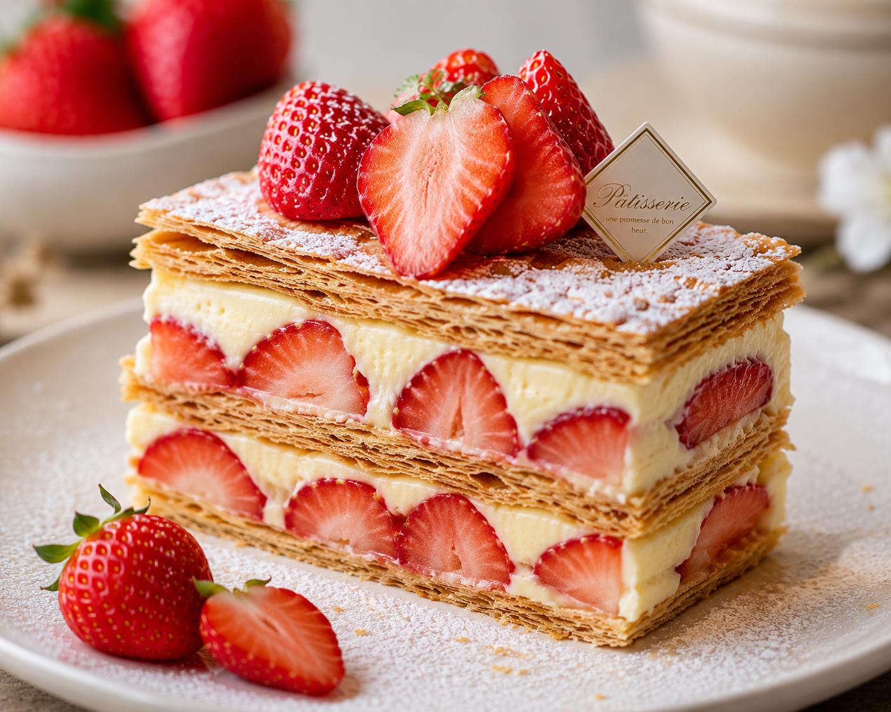

【點心推薦】法式經典草莓千層蛋糕

美味心得
這款千層蛋糕的餅皮薄如紙片，層層堆疊之間夾入了口感細緻、甜而不膩的香草卡士達醬。最讓人驚豔的是裡面鋪滿了新鮮的大顆草莓，酸甜滋味完美中和了奶油的甜度，每一口都能吃到多層次的豐富口感，是搭配下午茶茶飲的絕佳選擇。

這款千層蛋糕的餅皮薄如紙片，層層堆疊之間夾入了口感細緻、甜而不膩的香草卡士達醬。最讓人驚豔的是裡面鋪滿了新鮮的大顆草莓，酸甜滋味完美中和了奶油的甜度，每一口都能吃到多層次的豐富口感，是搭配下午茶茶飲的絕佳選擇。